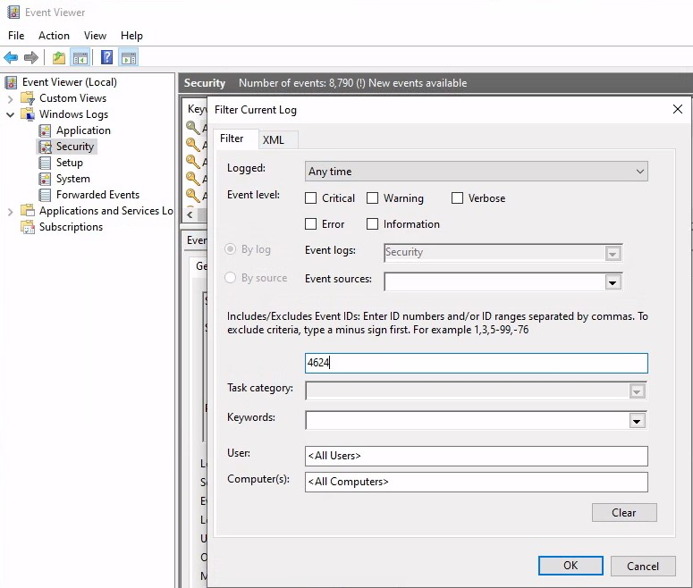
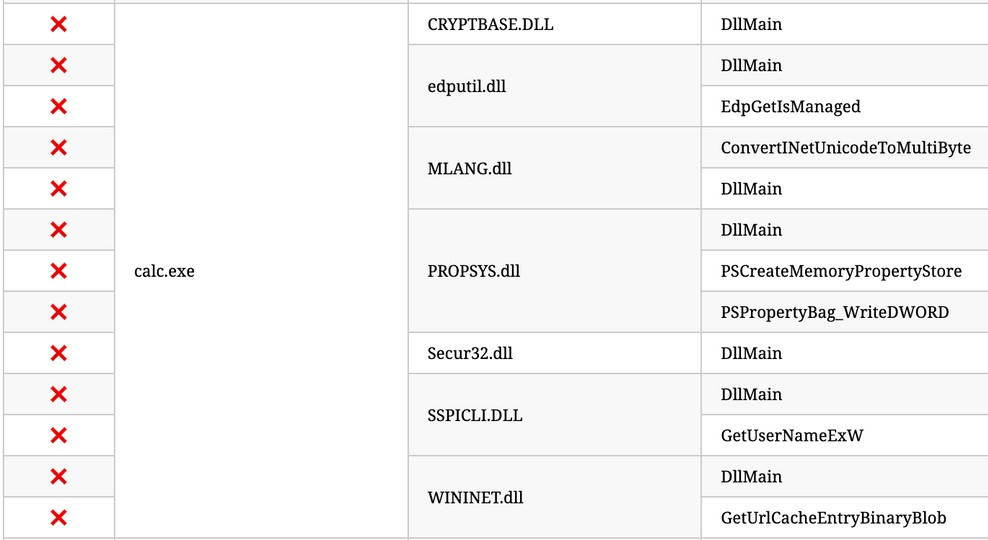
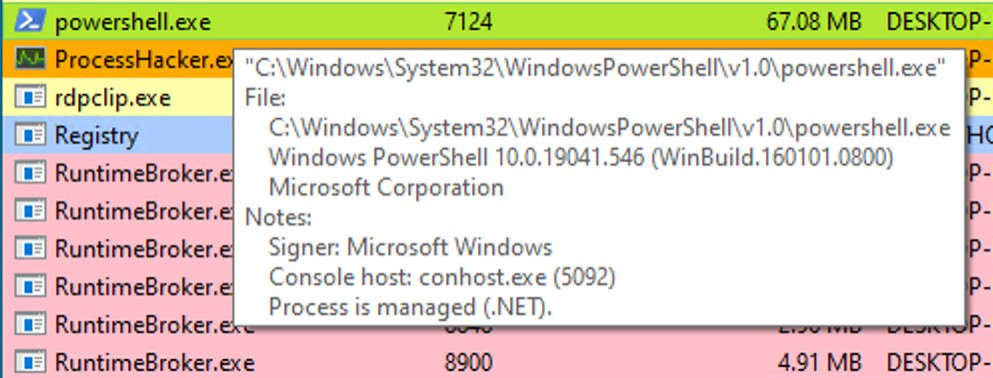
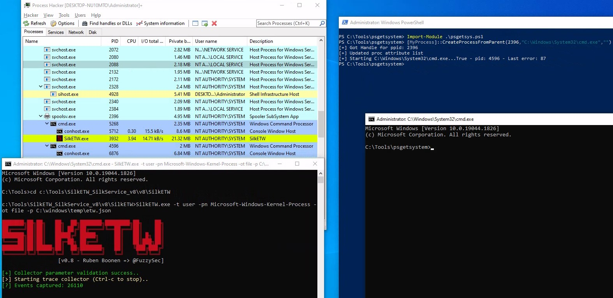

Introducción
Este módulo es parte del plan de estudios para la certificación CDSA (HTB Certified Defensive Security Analyst) y está diseñado para profundizar en el análisis de los Event Logs de Windows.
El contenido incluye el uso de Sysmon y presenta ejemplos prácticos de detección de amenazas reales, como DLL hijacking, unmanaged PowerShell/C-Sharp injection y credential dumping.
Además, el módulo explora el funcionamiento del Event Tracing for Windows (ETW), desglosando su arquitectura y componentes clave, al tiempo que demuestra cómo interactuar con esta tecnología para una monitorización efectiva.
Por último, se presenta el cmdlet Get-WinEvent, ideal para realizar análisis optimizados y eficientes de los Windows Event Logs, proporcionando las habilidades necesarias para abordar escenarios del mundo real en la ciberseguridad defensiva.
Windows Event Logs
Los Windows Event Logs son una parte intrínseca del sistema operativo Windows que almacena logs de diferentes componentes del sistema, incluido el sistema en sí, las aplicaciones que se ejecutan en él, los servicios, etc. Como profesionales de ciberseguridad, aprovechamos estos logs para el análisis y la detección de intrusiones.
Por default, incluyen las siguientes categorías: Application, Security, Setup, System y Forwarded. Cada una de ellas cumple una función específica:
- Application: Registra errores y eventos generados por aplicaciones.
- Security: Documenta eventos relacionados con la seguridad, como intentos de inicio de sesión y cambios en los permisos.
- Setup: Detalla actividades relacionadas con la configuración del sistema, como instalaciones de software.
- System: Proporciona información general del sistema, incluyendo fallos de hardware y errores de servicios.
- Forwarded: Recopila y muestra eventos reenviados desde otras máquinas.
Podemos acceder a los event logs mediante la aplicación Event Viewer. Es importante destacar que también permite abrir y visualizar archivos de logs guardados previamente en formato .evtx.
The Anatomy of an Event Log
Al examinar los Application logs, encontramos dos niveles distintos de eventos: information y error.
Los eventos de information brindan detalles generales sobre el uso de la aplicación, como sus eventos de inicio o detención. Por el contrario, los eventos de error resaltan errores específicos y, a menudo, ofrecen información detallada sobre los problemas encontrados.
Cada entrada del Windows Event Log es un "Event" y contiene los siguientes componentes principales:
- Log Name: Application, System, Security, etc.
- Source: el software que registró el evento.
- Event ID: un identificador único para el evento, que se puede investigar más a fondo en el sitio web de Microsoft.
- Task Category: a menudo contiene un valor o nombre que puede ayudarnos a comprender el propósito o el uso del evento.
- Level: la severity del evento (Information, Warning, Error, Critical y Verbose).
- Keyword: las keywords son flags que nos permiten categorizar los eventos de maneras que van más allá de las otras opciones de clasificación. Por lo general, son categorías amplias, como "Audit Success" o "Audit Failure"" en los Security logs.
- User: cuenta de usuario que estaba logueada cuando ocurrió el evento.
- OpCode: este campo puede identificar la operación específica que informa el evento.
- Logged: fecha y la hora en que se registró el evento.
- Computer: nombre del equipo en el que ocurrió el evento.
- XML Data: toda la información anterior también se incluye en formato XML junto con datos adicionales del evento.
Useful Windows Event Logs
Window Security Logs:
- Event ID 1102: The audit log was cleared.
- Event ID 1116: Microsoft Defender Antivirus malware detection.
- Event ID 1118: Microsoft Defender Antivirus remediation activity has started.
- Event ID 1119: Microsoft Defender Antivirus remediation activity has succeeded.
- Event ID 1120: Microsoft Defender Antivirus remediation activity has failed.
- Event ID 4624: Successful Logon.
- Event ID 4625: Failed Logon.
- Event ID 4648: A logon was attempted using explicit credentials.
- Event ID 4656: A handle to an object was requested.
- Event ID 4672: Special Privileges Assigned to a New Logon.
- Event ID 4698: A scheduled task was created.
- Event ID 4700 & Event ID 4701: A scheduled task was enabled/disabled.
- Event ID 4702: A scheduled task was updated.
- Event ID 4719: System audit policy was changed.
- Event ID 4738: A user account was changed.
- Event ID 4771: Kerberos pre-authentication failed.
- Event ID 4776: The domain controller attempted to validate the credentials for an account.
- Event ID 5001: Antivirus real-time protection configuration has changed.
- Event ID 5140: A network share object was accessed.
- Event ID 5142: A network share object was added.
- Event ID 5145: A network share object was checked to see whether client can be granted desired access.
- Event ID 5157: The Windows Filtering Platform has blocked a connection.
- Event ID 7045: A service was installed in the system.
Practical Exercises
Question: Analyze the event with ID 4624, that took place on 8/3/2022 at 10:23:25. Conduct a similar investigation as outlined in this section and provide the name of the executable responsible for the modification of the auditing settings as your answer. Answer format: T_W_____.exe
Inicialmente, vamos a filtrar por el Event ID 4624:

Sin embargo, si buscamos en ese timestamp puntual, no vemos ningún proceso con el nombre que nos indica el ejercicio "T_W_____.exe".
Solo se observa service.exe. Vamos a usar el Logon Id 0x3e7 que vemos en el log para hacer un filtro XML y tratar de encontrar eventos correlacionados asociados. De esta forma, limitamos nuestro enfoque solo a la cuenta responsable de iniciar el servicio:
24 segundos después de que se registrara el Event ID 4624, vemos que el Event ID 4907 nos muestra que se cambiaron las configuraciones de auditoría del objeto. También encontramos el archivo ejecutable responsable de la modificación, y es la respuesta al ejercicio.
Question: Build an XML query to determine if the previously mentioned executable modified the auditing settings of C:\Windows\Microsoft.NET\Framework64\v4.0.30319\WPF\wpfgfx_v0400.dll. Enter the time of the identified event in the format HH:MM:SS as your answer.
Basados en el log anterior y esta información, utilizamos la siguiente XML Query:
<QueryList>
<Query Id="0" Path="Security">
<Select Path="Security">
*[System[(EventID=4907)]]
and
*[EventData[Data[@Name='ObjectName']
and
(Data='C:\Windows\Microsoft.NET\Framework64\v4.0.30319\WPF\wpfgfx_v0400.dll')]]
</Select>
</Query>
</QueryList>
Encontramos el log:
Analyzing Evil With Sysmon & Event Logs
System Monitor (Sysmon) es un servicio de Windows que permanece activo incluso después de reiniciar el sistema, diseñado para monitorear y registrar actividades detalladas en el registro de eventos de Windows. Este servicio proporciona información valiosa sobre la creación de procesos, conexiones de red, cambios en los tiempos de creación de archivos, entre otros aspectos del sistema.
Los principales componentes de Sysmon incluyen:
- Windows service: Supervisa de manera continua la actividad del sistema.
- Device driver: Captura datos específicos de la actividad del sistema.
- Event log: Presenta los datos recopilados para su análisis.
Lo que hace a Sysmon único es su capacidad de registrar información avanzada que generalmente no está disponible en los Security Event Logs, lo que lo convierte en una herramienta esencial para la supervisión detallada del sistema y el análisis forense en ciberseguridad.
Sysmon categoriza las actividades del sistema mediante event IDs, donde cada identificador representa un tipo específico de evento. Por ejemplo:
- Event ID 1: Process Creation.
- Event ID 3: Network Connection.
La lista completa se puede encontrar aquí.
Podemos descargar Sysmon desde el sitio oficial de Microsoft. Luego, lo instalamos con el siguiente comando:
C:\Tools\Sysmon> sysmon.exe -i -accepteula -h md5,sha256,imphash -l -n
Para un control más granular sobre los eventos que se registran, Sysmon utiliza un archivo de configuración basado en XML. Este archivo le permite incluir o excluir ciertos tipos de eventos en función de diferentes atributos, como nombres de procesos, direcciones IP, etc.
Detection Example 1: Detecting DLL Hijacking
El objetivo es detectar un DLL Hijack. Los Events IDs de Sysmon relevantes para DLL hijacks se pueden encontrar en la documentación. Para detectar un DLL hijack, debemos centrarnos en el Event Type 7 (Image loaded).
El módulo nos propone el uso del siguiente archivo de configuración. Al examinar la configuración, podemos observar que el comentario include indica los eventos que se deben incluir:
Para detectar DLL hijacks, debemos cambiar "include" por "exclude" para garantizar que no se excluya nada, lo que nos permitirá capturar los datos necesarios.
Para utilizar Sysmon con ese archivo de configuración, lo ejecutamos de la siguiente manera:
C:\Tools\Sysmon> sysmon.exe -c sysmonconfig-export.xml

Question: Replicate the DLL hijacking attack described in this section and provide the SHA256 hash of the malicious WININET.dll as your answer. "C:\Tools\Sysmon" and "C:\Tools\Reflective DLLInjection" on the spawned target contain everything you need.
Con la configuración de Sysmon modificada, podemos comenzar a observar los eventos de image load. Para verlos, abrimos el Event Viewer y vamos a "Applications and Services" -> "Microsoft" -> "Windows" -> "Sysmon":
Veamos ahora cómo se ve un Event ID 7 de Sysmon:
El event log contiene el estado de signature de la DLL (en este caso, está firmada por Microsoft), el proceso o la imagen responsable de cargar la DLL y la DLL específica que se cargó. En el ejemplo, observamos que "MMC.exe" cargó "psapi.dll", que también está firmada por Microsoft. Ambos archivos se encuentran en el directorio System32.
Ahora, procedamos a crear un mecanismo de detección. Para obtener más información sobre los DLL hijacks, es fundamental realizar una investigación. Nos basamos en el siguiente blog, que proporciona una lista exhaustiva de varias técnicas de DLL hijack.
Para el propósito de nuestra detección, nos centraremos en uno específico que involucra al ejecutable vulnerable calc.exe y una lista de DLL que pueden secuestrarse.

Intentemos el hijack utilizando calc.exe y WININET.dll como ejemplo. Para simplificar el proceso, podemos utilizar la reflective DLL "hello world" de Stephen Fewer.
Si seguimos los pasos necesarios, que implican cambiar el nombre de reflective_dll.x64.dll a WININET.dll, mover calc.exe desde C:\Windows\System32 junto con WININET.dll a un directorio en el que se pueda escribir (como la carpeta Desktop) y ejecutar calc.exe, lo lograremos. En lugar de la aplicación Calculadora, se mostrará un MessageBox.
Ahora, analizemos el impacto del hijack. Nos dirigimos al Event Viewer y filtramos por Events IDs 7 haciendo click en "Filter Current Logs...". Luego, con "Find..." buscamos por "calc.exe" para identificar DLLs cargadas asociadas a nuestro hijack.
En el output de Sysmon vemos información valiosa como indicators of compromise (IOCs). El hash256 es la respuesta al ejercicio. Con esto, podemos crear reglas de detección:
Answer: 51F2305DCF385056C68F7CCF5B1B3B9304865CEF1257947D4AD6EF5FAD2E3B13
Exploremos estos IOC:
-
calc.exe, ubicado originalmente en System32, no debería encontrarse en un directorio con permisos de escritura. Por lo tanto, una copia de "calc.exe" en un directorio escribible sirve como IOC, ya que siempre debería residir en System32 o potencialmente en Syswow64.
-
WININET.dll, ubicado originalmente en System32, no debería ser cargado fuera de System32 por calc.exe. Si las instancias de carga de "WININET.dll" ocurren fuera de System32 con "calc.exe" como proceso principal, esto indica un DLL hijack dentro de calc.exe. Si bien es necesario tener precaución al alertar sobre todas las instancias de carga de "WININET.dll" fuera de System32 (ya que algunas aplicaciones pueden empaquetar versiones específicas de DLL para estabilidad), en el caso de "calc.exe", podemos afirmar con confianza que se trata de un hijack.
-
El archivo WININET.dll original está firmado por Microsoft, mientras que nuestra DLL inyectada permanece sin firmar.
Estos tres IOC proporcionan un medio eficaz para detectar un DLL hijack que involucre a calc.exe. Es importante tener en cuenta que, si bien Sysmon y los event logs ofrecen una valiosa telemetría para buscar y crear reglas de detección, no son las únicas fuentes de información.
Detection Example 2: Detecting Unmanaged PowerShell/C-Sharp Injection
C# es un lenguaje de programación "administrado" (managed), lo que significa que su código requiere un entorno de ejecución de backend para ejecutarse. Este entorno es proporcionado por el Common Language Runtime (CLR). En lugar de ejecutarse directamente como assembly, el código de C# se compila en un formato intermedio conocido como bytecode, el cual es procesado y ejecutado por el CLR. Por lo tanto, los procesos escritos en C# dependen del CLR para su ejecución.
Desde una perspectiva defensiva, este conocimiento puede ser aprovechado para identificar inyecciones o ejecuciones anómalas de C# dentro del entorno. Una herramienta valiosa para este propósito es Process Hacker, que permite monitorear procesos y detectar comportamientos sospechosos relacionados con el uso del CLR.
Al utilizar Process Hacker, podemos observar una variedad de procesos dentro de nuestro entorno. Al ordenar los procesos por nombre, podemos identificar interesantes distinciones codificadas por colores. En particular, "powershell.exe", un managed process, se resalta en verde en comparación con otros procesos. Al pasar el cursor sobre powershell.exe, se muestra la etiqueta "Process is managed (.NET)".

Question: Replicate the Unmanaged PowerShell attack described in this section and provide the SHA256 hash of clrjit.dll that spoolsv.exe will load as your answer. "C:\Tools\Sysmon" and "C:\Tools\PSInject" on the spawned target contain everything you need.
Podemos examinar los módulos cargados por powershell.exe haciendo clic derecho sobre el proceso y luego "Proporties" -> "Modules":
La presencia de "Microsoft .NET Runtime...", clr.dll y clrjit.dll debería llamar nuestra atención. Estas dos DLL se utilizan cuando se ejecuta código C# como parte del runtime para ejecutar el bytecode. Si observamos que estas DLL están cargadas en procesos que normalmente no las requieren, esto sugiere un posible ataque de execute-assembly o unmanaged PowerShell injection.
Para demostrar la unmanaged PowerShell injection, podemos inyectar una unmanaged PowerShell-like DLL en un proceso aleatorio, como spoolsv.exe. Podemos hacerlo utilizando el proyecto PSInject de la siguiente manera.
powershell -ep bypass
Import-Module .\Invoke-PSInject.ps1
Invoke-PSInject -ProcId [Process ID of spoolsv.exe] -PoshCode "V3JpdGUtSG9zdCAiSGVsbG8sIEd1cnU5OSEi"
Después de la inyección, observamos que "spoolsv.exe" pasa de un estado unmanaged a un estado managed:
Además, al consultar la pestaña "Modules" relacionada de Process Hacker y Sysmon Event ID 7, podemos examinar la información de carga de DLL para validar la presencia de las DLL mencionadas anteriormente:
En la siguiente imagen, tenemos el SHA256, que es la respuesta al ejercicio:
Event Tracing for Windows (ETW)
Event Tracing for Windows (ETW) es un mecanismo de tracing de alto rendimiento integrado en el sistema operativo Windows, diseñado para capturar eventos generados tanto por aplicaciones en user-mode como por drivers en kernel-mode. Utilizando un sistema de buffering y logging en el kernel, ETW permite la generación y análisis dinámico de eventos en tiempo real.
Este sistema proporciona telemetría detallada que incluye llamadas al sistema, creación y finalización de procesos, actividad de red, modificaciones de archivos y más, superando las limitaciones de los registros tradicionales. Su capacidad para identificar comportamientos anómalos, investigar incidentes de seguridad y realizar análisis forenses lo convierte en una herramienta importante para seguridad defensiva.
Interacting with ETW
Logman es una utilidad preinstalada para administrar el Event Tracing for Windows (ETW) y las Event Tracing Sessions. Esta herramienta es muy útil para crear, iniciar, detener e investigar tracing sessions.
Al utilizar el comando logman query providers, podemos generar una lista de todos los providers disponibles en el sistema, incluidos sus respectivos GUID.
Podemos filtrar utilizando findstr. Por ejemplo:
logman.exe query providers | findstr "Winlogon"
Detection Example 1: Detecting Strange Parent-Child Relationships
Las relaciones parent-child anormales entre procesos pueden ser indicativas de actividades maliciosas. En entornos estándar de Windows, ciertos procesos nunca llaman ni generan otros. Por ejemplo, es muy poco probable que "calc.exe" genere "cmd.exe" en un entorno normal. Comprender estas relaciones típicas puede ayudar a detectar anomalías. Samir Bousseaden ha compartido el siguiente mapa esclarecedor que presenta relaciones padre-hijo comunes.
Al utilizar Process Hacker, podemos explorar las relaciones padre-hijo dentro de Windows:
Analizar estas relaciones nos permite identificar desviaciones de los patrones normales. Por ejemplo, si observamos que el proceso "spoolsv.exe" crea "whoami.exe" en lugar de su comportamiento esperado de crear un "conhost", esto genera sospechas.
Para mostrar una extraña relación padre-hijo, donde "cmd.exe" parece haber sido creado por "spoolsv.exe" sin argumentos que lo acompañen, utilizaremos una técnica de ataque llamada Parent PID Spoofing, que se puede ejecutar a través del proyecto psgetsystem de la siguiente manera:
powershell -ep bypass
Import-Module .\psgetsys.ps1
[MyProcess]::CreateProcessFromParent([Process ID of spoolsv.exe],"C:\Windows\System32\cmd.exe","")
Debido a la técnica de Parent PID Spoofing que empleamos, Sysmon muestra incorrectamente spoolsv.exe como el parent de cmd.exe, cuando en realidad fue powershell.exe el que lo creó.
Aunque Sysmon y los event logs proporcionan una valiosa telemetría para buscar y crear reglas de detección, no son las únicas fuentes de información. Comencemos por recopilar datos del provider Microsoft-Windows-Kernel-Process utilizando SilkETW (el provider se puede identificar utilizando logman.exe query providers | findstr "Process"). Después de eso, podemos proceder a simular el ataque nuevamente para evaluar si ETW puede proporcionarnos información más precisa sobre la ejecución de cmd.exe.

En el archivo resultante etw.json (que incluye datos del provider Microsoft-Windows-Kernel-Process) encontraremos información acerca de que powershell.exe es quien creó cmd.exe. Se analizará en la siguiente demostración, ya que es el que plantea el ejercicio.
Cabe señalar que los event logs SilkETW pueden ser ingestados en el Event Viewer de Windows a través de SilkService para brindarnos una visibilidad más profunda y extensa de las acciones realizadas en un sistema.
Detection Example 2: Detecting Malicious .NET Assembly Loading
Question: Replicate executing Seatbelt and SilkETW as described in this section and provide the ManagedInteropMethodName that starts with "G" and ends with "ion" as your answer. "c:\Tools\SilkETW_SilkService_v8\v8" and "C:\Tools\GhostPack Compiled Binaries" on the spawned target contain everything you need.
El laboratorio nos propone emular una carga maliciosa de un assembly .NET ejecutando una versión precompilada de Seatbelt desde el disco. Seatbelt es una herramienta comúnmente utilizada por atacantes para obtener información sobre un sistema comprometido, cargándola y ejecutándola en memoria.
Suponiendo que Sysmon esté configurado correctamente para registrar eventos de image loading (Event ID 7), la ejecución de 'Seatbelt.exe' activaría la carga de DLL claves relacionadas con .NET, como 'clr.dll' y 'mscoree.dll'.
Como ya se mencionó, depender únicamente de Sysmon Event ID 7 para detectar ataques puede ser un desafío debido al gran volumen de eventos que genera (especialmente si no se configura correctamente). Además, si bien nos informa sobre las DLL que se están cargando, no proporciona detalles granulares sobre el contenido real del ensamblaje .NET cargado.
Para aumentar nuestra visibilidad y obtener información más detallada sobre el assembly real que se está cargando, podemos aprovechar nuevamente Event Tracing for Windows (ETW) y, específicamente, el provider Microsoft-Windows-DotNETRuntime.
Usemos SilkETW para recopilar datos del proveedor Microsoft-Windows-DotNETRuntime. Después de eso, podemos proceder a simular el ataque nuevamente para evaluar si ETW puede brindarnos información más detallada y procesable sobre la carga y ejecución del assembly .NET "Seatbelt".
c:\Tools\SilkETW_SilkService_v8\v8\SilkETW>SilkETW.exe -t user -pn Microsoft-Windows-DotNETRuntime -uk 0x2038 -ot file -p C:\windows\temp\etw.json
Luego, abrimos el archivo etw.json y buscamos por ManagedInteropMethodName para encontrar la respuesta:
Answer: GetTokenInformation
Get-WinEvent
El cmdlet Get-WinEvent de PowerShell es una herramienta esencial para consultar Windows Event logs de manera masiva. Permite acceder a diversos tipos de logs, incluidos los clásicos como System y Application, los generados por la tecnología Windows Event Log y los de Event Tracing for Windows (ETW).
Para listar los logs disponibles, se puede usar el parámetro -ListLog con el valor *, lo que devuelve un listado completo de logs junto con propiedades clave como LogName, RecordCount, IsClassicLog, IsEnabled, LogMode y LogType. Esto se logra con el siguiente comando:
Get-WinEvent -ListLog * | Select-Object LogName, RecordCount, IsClassicLog, IsEnabled, LogMode, LogType | Format-Table -AutoSize
Además, podemos explorar los event log providers asociados a cada log utilizando el parámetro -ListProvider. Los event log providers son los sources que generan los eventos dentro de los logs.
Get-WinEvent -ListProvider * | Format-Table -AutoSize
Ahora, centrémonos en obtener event logs específicos usando el cmdlet Get-WinEvent.
1 - Retrieving events from the System log
El siguiente ejemplo obtiene los primeros 50 events logs de tipo System:
Get-WinEvent -LogName 'System' -MaxEvents 50 | Select-Object TimeCreated, ID, ProviderName, LevelDisplayName, Message | Format-Table -AutoSize
2 - Retrieving events from Microsoft-Windows-WinRM/Operational
Ahora obtenemos los últimos 30 event logs de Microsoft-Windows-WinRM/Operational:
Get-WinEvent -LogName 'Microsoft-Windows-WinRM/Operational' -MaxEvents 30 | Select-Object TimeCreated, ID, ProviderName, LevelDisplayName, Message | Format-Table -AutoSize
3 - Retrieving events from .evtx Files
También podemos usar el cmdlet Get-WinEvent para leer y consultar logs desde un archivo .evtx:
Get-WinEvent -Path 'C:\Tools\chainsaw\EVTX-ATTACK-SAMPLES\Execution\exec_sysmon_1_lolbin_pcalua.evtx' -MaxEvents 5 | Select-Object TimeCreated, ID, ProviderName, LevelDisplayName, Message | Format-Table -AutoSize
4 - Filtering events with FilterHashtable
Para filtrar los events logs, podemos usar el parámetro -FilterHashtable, que nos permite definir condiciones específicas para los logs que queremos recuperar. El siguiente comando recupera eventos con los IDs 1 y 3 del log Microsoft-Windows-Sysmon/Operational, selecciona propiedades específicas de esos eventos y las muestra en formato de tabla.
Get-WinEvent -FilterHashtable @{LogName='Microsoft-Windows-Sysmon/Operational'; ID=1,3} | Select-Object TimeCreated, ID, ProviderName, LevelDisplayName, Message | Format-Table -AutoSize
Para eventos exportados, el comando equivalente sería el siguiente:
Get-WinEvent -FilterHashtable @{Path='C:\Tools\chainsaw\EVTX-ATTACK-SAMPLES\Execution\sysmon_mshta_sharpshooter_stageless_meterpreter.evtx'; ID=1,3} | Select-Object TimeCreated, ID, ProviderName, LevelDisplayName, Message | Format-Table -AutoSize
Nota: Estos logs están relacionados con un proceso que se comunica con un servidor de Command and Control (C2) inmediatamente después de su creación.
También podemos obtener eventos basados en un rango de fechas, por ejemplo de 28/5/23 a 2/6/2023:
$startDate = (Get-Date -Year 2023 -Month 5 -Day 28).Date
$endDate = (Get-Date -Year 2023 -Month 6 -Day 3).Date
Get-WinEvent -FilterHashtable @{LogName='Microsoft-Windows-Sysmon/Operational'; ID=1,3; StartTime=$startDate; EndTime=$endDate} | Select-Object TimeCreated, ID, ProviderName, LevelDisplayName, Message | Format-Table -AutoSize
5 - Filtering events with FilterHashtable & XML
Considere un escenario de detección de intrusiones en el que se ha identificado una conexión de red sospechosa a una dirección IP en particular (52.113.194.132). Con Sysmon instalado, puede utilizar los Event ID 3 (CNetwork Connection) para investigar la posible amenaza.
Este script recuperará todos los eventos de network connection de Sysmon (ID 3), analizará los datos XML de cada uno para obtener detalles específicos (source IP, destination IP, Process GUID y Process ID), y filtrará los resultados para incluir solo eventos en los que la IP de destino coincida con la IP sospechosa:
Get-WinEvent -FilterHashtable @{LogName='Microsoft-Windows-Sysmon/Operational'; ID=3} |
`ForEach-Object {
$xml = [xml]$_.ToXml()
$eventData = $xml.Event.EventData.Data
New-Object PSObject -Property @{
SourceIP = $eventData | Where-Object {$_.Name -eq "SourceIp"} | Select-Object -ExpandProperty '#text'
DestinationIP = $eventData | Where-Object {$_.Name -eq "DestinationIp"} | Select-Object -ExpandProperty '#text'
ProcessGuid = $eventData | Where-Object {$_.Name -eq "ProcessGuid"} | Select-Object -ExpandProperty '#text'
ProcessId = $eventData | Where-Object {$_.Name -eq "ProcessId"} | Select-Object -ExpandProperty '#text'
}
} | Where-Object {$_.DestinationIP -eq "52.113.194.132"}
DestinationIP ProcessId SourceIP ProcessGuid
------------- --------- -------- -----------
52.113.194.132 9196 10.129.205.123 {52ff3419-51ad-6475-1201-000000000e00}
52.113.194.132 5996 10.129.203.180 {52ff3419-54f3-6474-3d03-000000000c00}
Además, podemos usar el ProcessGuid para rastrear el proceso original que realizó la conexión, lo que nos permitirá comprender el árbol de procesos e identificar cualquier ejecutable o script malicioso.
En la sección anterior, estábamos buscando actividad anómala de carga de clr.dll y mscoree.dll en procesos que normalmente no las requerirían. El siguiente comando aprovecha el Event ID 7 de Sysmon para detectar la carga de estos DLLs mencionados:
$Query = @"
<QueryList>
<Query Id="0">
<Select Path="Microsoft-Windows-Sysmon/Operational">*[System[(EventID=7)]] and *[EventData[Data='mscoree.dll']] or *[EventData[Data='clr.dll']]
</Select>
</Query>
</QueryList>
"@
Get-WinEvent -FilterXml $Query | ForEach-Object {Write-Host $_.Message `n}
6 - Filtering events with FilterXPath
Para utilizar consultas XPath con Get-WinEvent, empleamos el parámetro -FilterXPath, que nos permite definir consultas avanzadas para filtrar los event logs.
Por ejemplo, si queremos obtener eventos de Process Creation (Sysmon Event ID 1) en Sysmon para identificar la instalación de herramientas de Sysinternals, podemos usar el siguiente comando:
Get-WinEvent -LogName 'Microsoft-Windows-Sysmon/Operational' -FilterXPath "*[EventData[Data[@Name='Image']='C:\Windows\System32\reg.exe']] and *[EventData[Data[@Name='CommandLine']='`"C:\Windows\system32\reg.exe`" ADD HKCU\Software\Sysinternals /v EulaAccepted /t REG_DWORD /d 1 /f']]" | Select-Object TimeCreated, ID, ProviderName, LevelDisplayName, Message | Format-Table -AutoSize
Nota: Image y CommandLine se pueden identificar explorando la representación XML de cualquier evento de Sysmon con ID 1 con Event Viewer.
Supongamos nuevamente que queremos investigar las conexiones de red a una dirección IP sospechosa en particular (52.113.194.132) que Sysmon ha registrado. Para ello, podemos utilizar el siguiente comando:
Get-WinEvent -LogName 'Microsoft-Windows-Sysmon/Operational' -FilterXPath "*[System[EventID=3] and EventData[Data[@Name='DestinationIp']='52.113.194.132']]"
ProviderName: Microsoft-Windows-Sysmon
TimeCreated Id LevelDisplayName Message
----------- -- ---------------- -------
5/29/2023 6:30:24 PM 3 Information Network connection detected:...
5/29/2023 12:32:05 AM 3 Information Network connection detected:...
7 - Filtering events based on property values
El parámetro -Property , cuando se utiliza con Select-Object*, indica al comando que seleccione todas las propiedades de los objetos que se le pasan.
Por ejemplo, para ver todas las propiedades de los eventos Sysmon Event ID 1, podemos ejecutar:
Get-WinEvent -FilterHashtable @{LogName='Microsoft-Windows-Sysmon/Operational'; ID=1} -MaxEvents 1 | Select-Object -Property *
Practical Exercise
Question: Utilize the Get-WinEvent cmdlet to traverse all event logs located within the "C:\Tools\chainsaw\EVTX-ATTACK-SAMPLES\Lateral Movement" directory and determine when the \*\PRINT share was added. Enter the time of the identified event in the format HH:MM:SS as your answer.
Vamos a usar el Event ID 5142, que como se mencionó arriba, permite ver cuando se agrega un recurso de red compartido.
Get-WinEvent -FilterHashtable @{Path='C:\Tools\chainsaw\EVTX-ATTACK-SAMPLES\Lateral Movement\*'; } | Where-Object { $_.Id -eq "5142" }
Skill Assessment
Question 1: By examining the logs located in the "C:\Logs\DLLHijack" directory, determine the process responsible for executing a DLL hijacking attack. Enter the process name as your answer. Answer format: _.exe
Abrimos los logs almacenados en el directorio por C:\Logs\DLLHijack y filtramos por los Event ID 7. Luego, buscaremos por logs con "signed: false" para buscar dll que no estén firmadas digitalmente, lo que puede darnos un indicio de que es responsable de ejecutar un ataque de DLL Hijack.
Vemos que C:\ProgramData\DismCore.dll no está firmado digitalmente. El archivo con extensión .exe es la respuesta a la pregunta.
Question 2: By examining the logs located in the "C:\Logs\PowershellExec" directory, determine the process that executed unmanaged PowerShell code. Enter the process name as your answer. Answer format: _.exe
En esta ocasión, necesitamos revisar los logs del directorio C:\Logs\PowershellExec. Para identificar el proceso que ejecutó el código de PowerShell unmanaged.
Como vimos antes, la presencia de "Microsoft .NET Runtime...", clr.dll y clrjit.dll debería llamar nuestra atención. Si observamos estas DLL cargadas en procesos que normalmente no las requieren, sugiere un posible ataque de inyección de unamanged PowerShell. Buscamos por estas dll y obtenemos nuestra respuesta:
Question 3: By examining the logs located in the "C:\Logs\PowershellExec" directory, determine the process that injected into the process that executed unmanaged PowerShell code. Enter the process name as your answer. Answer format: _.exe
El uso de la función CreateRemoteThread en Windows es común en técnicas de inyección de código, utilizadas tanto por herramientas legítimas como por actores maliciosos para ejecutar código en procesos remotos. Para detectar este comportamiento, podemos analizar los eventos de Sysmon Event ID 8, que registran detalles sobre la inyección de procesos.
En este caso tenemos pocos logs. Revisandolos damos con la respuesta.
Question 4: By examining the logs located in the "C:\Logs\Dump" directory, determine the process that performed an LSASS dump. Enter the process name as your answer. Answer format: _.exe
Los atacantes a menudo apuntan a LSASS para dumpear su memoria porque contiene información confidencial como credenciales de usuario (hashes de contraseña, tickets Kerberos, etc.). Los Windows Events ID 10 (ProcessAccess) está relacionado con eventos generados por WMI (Windows Management Instrumentation) y puede indicar actividad sospechosa. Dependiendo del origen del evento, puede significar diferentes cosas:
- Actividad WMI sospechosa: Uso de WMI para ejecutar comandos o recopilar información del sistema.
- Cuando un proceso accede a otro proceso en memoria, como en ataques de credential dumping (ejemplo: acceso a LSASS). Puede ser señal de inyección de código malicioso o herramientas de post-explotación como Mimikatz.
Teniendo en cuenta esto, abrimos el archivo C:\Logs\Dump\LsassDump y filtramos por los Event ID 10. Luego, buscamos por TargetImage: C:\Windows\System32\lsass.exe:

Question 5: By examining the logs located in the "C:\Logs\Dump" directory, determine if an ill-intended login took place after the LSASS dump. Answer format: Yes or No
Después de un dumping de LSASS, pueden ocurrir distintos eventos de inicio de sesión, dependiendo de las acciones del atacante. En este caso, busqué eventos con ID 4624 (que indica un inicio de sesión exitoso), pero no encontré entradas relevantes.
Question 6: By examining the logs located in the "C:\Logs\StrangePPID" directory, determine a process that was used to temporarily execute code based on a strange parent-child relationship. Enter the process name as your answer. Answer format: _.exe
Abrimos el archivo C:\Logs\StrangePPID y en Event Viewer filtramos por Event ID 1, que registra específicamente los eventos de creación de procesos.
La ejecución de WerFault.exe como proceso padre de cmd.exe es una señal de alerta, ya que WerFault.exe es el Windows Error Reporting y normalmente no debería iniciar un cmd. En el log se observa cmd.exe /c whoami. Esto es inofensivo en sí mismo, puede ser una prueba de concepto antes de ejecutar comandos maliciosos.